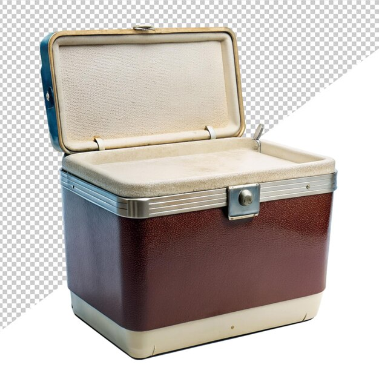

1970
El medio ambiente se convirtió en una prioridad durante los años setentas y ochentas, cuando el científico mexicano Mario Molina y su colega el estadounidense Sherwood Rowland descubrieron que los clorofluorocarbonos o CFCs como el Freón se habían estado acumulando en la atmósfera y su uso ponía en peligro la capa de ozono de todo el planeta.
1980: ahorro y frescura en un solo electrodoméstico
El propósito del refrigerador no ha cambiado: preservar la frescura de los alimentos, pero ahora los beneficios de ahorro también son importantes. La nevera se convierte en electrodoméstico indispensable en el hogar, se le añade ahorro de energía y funcionalidades como: el dispensador de líquidos, con el objetivo de facilitar las tareas del hogar.
1980
En la década de 1980, el negro se puso de moda. A fines de la década de 1990 el acero inoxidable se puso de moda. Desde 1961, el Color Marketing Group ha intentado coordinar los colores de los electrodomésticos y otros bienes de consumo.
1987
El Protocolo de Montreal de 1987 sirvió como un acuerdo internacional para eliminar paulatinamente las sustancias de los refrigeradores (clorofluorocarbonos o CFCs como el Freón) en todo el mundo y a partir de la década de los noventas, todos los refrigeradores y aparatos de aire acondicionado usan refrigerantes menos dañinos para el ambiente y que también los hacen más eficientes en su consumo de energía.
